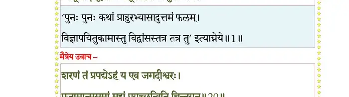
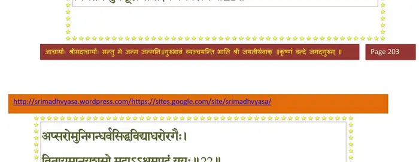
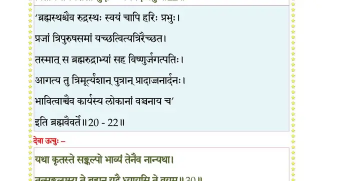
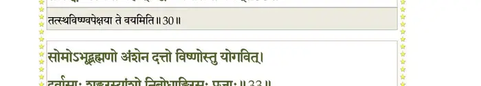
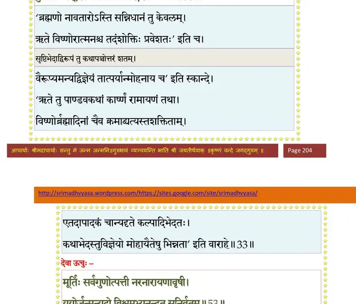
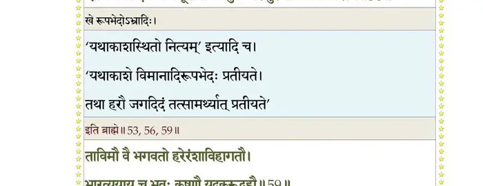
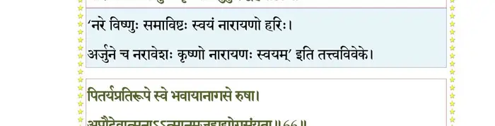
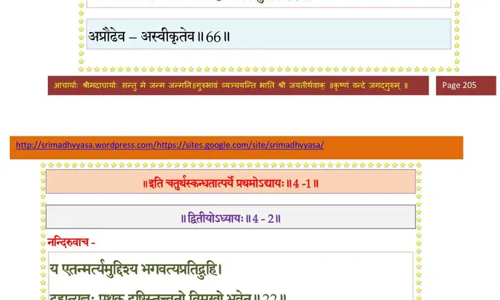

स्कन्ध 4 · अध्याय 1
श्लोक १
मैत्रेय उवाच–
मनोस्तु शतरूपायां तिस्रः कन्याश्च जज्ञिरे ।
आकूतिर्देवहूतिश्च प्रसूतिरिति विश्रुताः।। १ ।।
मनोस्तु शतरूपायां तिस्रः कन्याश्च जज्ञिरे ।
आकूतिर्देवहूतिश्च प्रसूतिरिति विश्रुताः।। १ ।।
भागवततात्पर्यनिर्णय

श्लोक २
आकूतिं रुचये प्रादादपि भ्रातृमतीं नृपः ।
पुत्रिकाधर्ममाश्रित्य शतरूपानुमोदितः।। २ ।।
पुत्रिकाधर्ममाश्रित्य शतरूपानुमोदितः।। २ ।।
श्लोक ३
प्रजापतिः स भगवान् रुचिस्तस्यामजीजनत् ।
मिथुनं ब्रह्मवर्चस्वी परमेण समाधिना।। ३ ।।
मिथुनं ब्रह्मवर्चस्वी परमेण समाधिना।। ३ ।।
श्लोक ४
यस्तयोः पुरुषः साक्षाद् विष्णुर्यज्ञस्वरूपधृक् ।
या स्त्री सा दक्षिणा भूतेरंशभूताऽनपायिनी।। ४ ।।
या स्त्री सा दक्षिणा भूतेरंशभूताऽनपायिनी।। ४ ।।
श्लोक ५
आनिन्ये स्वगृहं पुत्र्याः पुत्रं विततरोचिषम् ।
स्वायम्भुवो मुदा युक्तो रुचिर्जग्राह दक्षिणाम्।। ५ ।।
स्वायम्भुवो मुदा युक्तो रुचिर्जग्राह दक्षिणाम्।। ५ ।।
श्लोक ६
तां कामयानां भगवानुवाह यजुषां पतिः ।
तुष्टायां तोषमापन्नोऽजनयद् द्वादशात्मजान्।। ६ ।।
तुष्टायां तोषमापन्नोऽजनयद् द्वादशात्मजान्।। ६ ।।
श्लोक ७
तोषः प्रतोषः सन्तोषो भद्रः शान्तिरिडस्पतिः ।
इन्द्रः कविर्भुवः स्वाहः सुदेवो रोचनो द्विषट्।। ७ ।।
इन्द्रः कविर्भुवः स्वाहः सुदेवो रोचनो द्विषट्।। ७ ।।
श्लोक ८
तुषिता नाम ते देवा आसन् स्वायम्भुवान्तरे ।
मरीचिमिश्रा ऋषयो यज्ञः सुरगणेश्वरः।। ८ ।।
मरीचिमिश्रा ऋषयो यज्ञः सुरगणेश्वरः।। ८ ।।
श्लोक ९
प्रियव्रतोत्तानपादौ मनुपुत्रौ महौजसौ ।
तत्पुत्रपौत्रनप्तॄणामनुवृत्तं तदन्तरम्।। ९ ।।
तत्पुत्रपौत्रनप्तॄणामनुवृत्तं तदन्तरम्।। ९ ।।
श्लोक १०
देवहूतिमदात् तात कर्दमायात्मजां मनुः ।
तत्सम्बन्धि श्रुतप्रायं भवता गदतो मम।। १० ।।
तत्सम्बन्धि श्रुतप्रायं भवता गदतो मम।। १० ।।
श्लोक ११
दक्षाय ब्रह्मपुत्राय प्रसूतिं भगवान् मनुः ।
प्रायच्छद् यत्कृतः सर्गस्त्रिलोक्यां विततो महान्।। ११ ।।
प्रायच्छद् यत्कृतः सर्गस्त्रिलोक्यां विततो महान्।। ११ ।।
श्लोक १२
याः कर्दमसुताः प्रोक्ता नव ब्रह्मर्षिपत्नयः ।
तासां प्रसूतिप्रसरं प्रोच्यमानं निबोध मे।। १२ ।।
तासां प्रसूतिप्रसरं प्रोच्यमानं निबोध मे।। १२ ।।
श्लोक १३
पत्नी मरीचेस्तु कला सुषुवे कर्दमात्मजा ।
कश्यपं पूर्णिमानं च ययोरापूरितं जगत्।। १३ ।।
कश्यपं पूर्णिमानं च ययोरापूरितं जगत्।। १३ ।।
श्लोक १४
पूर्णिमाऽसूत विरजं विश्वगां च परन्तप ।
देवकुल्या हरेः पादशौचाद् याऽभूत् सरिद् दिवः।। १४ ।।
देवकुल्या हरेः पादशौचाद् याऽभूत् सरिद् दिवः।। १४ ।।
श्लोक १५
अत्रेः पत्न्यनसूया त्रीन् जज्ञे सुयशसः सुतान् ।
दत्तं दुर्वाससं सोममात्मेशब्रह्मसम्भवान्।। १५ ।।
दत्तं दुर्वाससं सोममात्मेशब्रह्मसम्भवान्।। १५ ।।
श्लोक १६
विदुर उवाच–
अत्रेर्गृहे सुरश्रेष्ठाः स्थित्यन्तोत्पत्तिहेतवः ।
किंस्विच्चिकीर्षवो जाता एतदाख्याहि मे गुरो।। १६ ।।
अत्रेर्गृहे सुरश्रेष्ठाः स्थित्यन्तोत्पत्तिहेतवः ।
किंस्विच्चिकीर्षवो जाता एतदाख्याहि मे गुरो।। १६ ।।
श्लोक १७
मैत्रेय उवाच–
ब्रह्मणा चोदितः सृष्टावत्रिर्ब्रह्मविदां वरः ।
सह पत्न्या ययौ ऋक्षं कुलाद्रिं तपसि स्थितः।। १७ ।।
ब्रह्मणा चोदितः सृष्टावत्रिर्ब्रह्मविदां वरः ।
सह पत्न्या ययौ ऋक्षं कुलाद्रिं तपसि स्थितः।। १७ ।।
श्लोक १८
तस्मिन् प्रसूनस्तबकपलाशाशोककानने ।
वार्भिः स्रवद्भिरुद्घुष्टे निर्विन्ध्यायाः समन्ततः।। १८ ।।
वार्भिः स्रवद्भिरुद्घुष्टे निर्विन्ध्यायाः समन्ततः।। १८ ।।
श्लोक १९
प्राणायामेन संयम्य मनो वर्षशतं मुनिः ।
अतिष्ठदेकपादेन निर्द्वन्द्वोऽनिलभोजनः।। १९ ।।
अतिष्ठदेकपादेन निर्द्वन्द्वोऽनिलभोजनः।। १९ ।।
श्लोक २०
शरणं तं प्रपद्येऽहं य एव जगदीश्वरः ।
प्रजामात्मसमां मह्यं प्रयच्छत्विति चिन्तयन्।। २० ।।
प्रजामात्मसमां मह्यं प्रयच्छत्विति चिन्तयन्।। २० ।।
भागवततात्पर्यनिर्णय
श्लोक २१
तप्यमानं त्रिभुवनं प्राणायामैधिताग्निना ।
निर्गतेन मुनेर्मूघ्नः समीक्ष्य प्रभवस्त्रयः।। २१ ।।
निर्गतेन मुनेर्मूघ्नः समीक्ष्य प्रभवस्त्रयः।। २१ ।।
भागवततात्पर्यनिर्णय

श्लोक २२
अप्सरोमुनिगन्धर्वसिद्धविद्याधरोरगैः ।
वितायमानयशसो मुदाऽऽश्रमपदं ययुः।। २२ ।।
वितायमानयशसो मुदाऽऽश्रमपदं ययुः।। २२ ।।
भागवततात्पर्यनिर्णय

श्लोक २३
तत्प्रादुर्भावसंयोगविद्योतितमना मुनिः ।
उत्तिष्ठन्नेकपादेन ददृशे विबुधर्षभान्।। २३ ।।
उत्तिष्ठन्नेकपादेन ददृशे विबुधर्षभान्।। २३ ।।
श्लोक २४
प्रणम्य दण्डवद् भूमावुपतस्थेऽर्हणाञ्जलिः ।
वृषहंससुपर्णस्थान् स्वैः स्वैश्चिह्नैश्च चिह्नितान्।। २४ ।।
वृषहंससुपर्णस्थान् स्वैः स्वैश्चिह्नैश्च चिह्नितान्।। २४ ।।
श्लोक २५
कृपावलोकेन लसद्वदनेनोपलम्भितान् ।
तच्छोचिषा प्रतिहते निमील्य मुनिरक्षिणी।। २५ ।।
तच्छोचिषा प्रतिहते निमील्य मुनिरक्षिणी।। २५ ।।
श्लोक २६
चेतस्तत्प्रवणं युञ्जन्नस्तावीत् संहताञ्जलिः ।
श्लक्ष्णया सूक्तया वाचा सर्वलोकगरीयसः।। २६ ।।
श्लक्ष्णया सूक्तया वाचा सर्वलोकगरीयसः।। २६ ।।
श्लोक २७
अत्रिरुवाच–
विश्वोद्भवस्थितिलयेषु विभज्यमानै-
र्मायागुणैरनुगुणं प्रगृहीतदेहाः ।
हे ब्रह्मविष्णुगिरिशाः प्रणतोऽस्म्यहं व-
स्तेभ्यः क एव भवतां म इहोपहूतः।। २७ ।।
विश्वोद्भवस्थितिलयेषु विभज्यमानै-
र्मायागुणैरनुगुणं प्रगृहीतदेहाः ।
हे ब्रह्मविष्णुगिरिशाः प्रणतोऽस्म्यहं व-
स्तेभ्यः क एव भवतां म इहोपहूतः।। २७ ।।
श्लोक २८
एको मयेह भगवान् विबुधप्रधान-
श्चित्तीकृतः प्रजननाय कथं नु यूयम् ।
अत्रागतास्तनुभृतां मनसोऽपि दूरा
ब्रूत प्रसीदत महानतिविस्मयो मे।। २८ ।।
श्चित्तीकृतः प्रजननाय कथं नु यूयम् ।
अत्रागतास्तनुभृतां मनसोऽपि दूरा
ब्रूत प्रसीदत महानतिविस्मयो मे।। २८ ।।
श्लोक २९
मैत्रेय उवाच–
इति तस्य वचः श्रुत्वा त्रयस्ते विबुधर्षभाः ।
प्रत्यूचुः श्लक्ष्णया वाचा प्रहसन्तो मुनिं प्रभो।। २९ ।।
इति तस्य वचः श्रुत्वा त्रयस्ते विबुधर्षभाः ।
प्रत्यूचुः श्लक्ष्णया वाचा प्रहसन्तो मुनिं प्रभो।। २९ ।।
श्लोक ३०
देवा ऊचुः–
यथा कृतस्ते सङ्कल्पो भाव्यं तेनैव नान्यथा ।
तत्सङ्कल्पस्य ते ब्रह्मन् यद् वै ध्यायसि ते वयम्।। ३० ।।
यथा कृतस्ते सङ्कल्पो भाव्यं तेनैव नान्यथा ।
तत्सङ्कल्पस्य ते ब्रह्मन् यद् वै ध्यायसि ते वयम्।। ३० ।।
भागवततात्पर्यनिर्णय

श्लोक ३१
अथास्मदंशभूतास्ते आत्मजा लोकविश्रुताः ।
भवितारोऽङ्ग भद्रं ते वितरिष्यन्ति ते यशः।। ३१ ।।
भवितारोऽङ्ग भद्रं ते वितरिष्यन्ति ते यशः।। ३१ ।।
श्लोक ३२
एवं कामवरं दत्वा प्रतिजग्मुः सुरेश्वराः ।
सभाजितास्तयोः सम्यग् दम्पत्योर्मिषतोस्ततः।। ३२ ।।
सभाजितास्तयोः सम्यग् दम्पत्योर्मिषतोस्ततः।। ३२ ।।
श्लोक ३३
सोमोऽभूद् ब्रह्मणोंऽशेन दत्तो विष्णोस्तु योगवित् ।
दुर्वासाः शङ्करस्यांशो निबोधाङ्गिरसः प्रजाः।। ३३ ।।
दुर्वासाः शङ्करस्यांशो निबोधाङ्गिरसः प्रजाः।। ३३ ।।
भागवततात्पर्यनिर्णय

श्लोक ३४
श्रद्धा त्वङ्गिरसः पत्नी चतस्रोऽसूत कन्यकाः ।
सिनीवाली कुहू राका चतुर्थ्यनुमतिस्तथा।। ३४ ।।
सिनीवाली कुहू राका चतुर्थ्यनुमतिस्तथा।। ३४ ।।
श्लोक ३५
तत्पुत्रावपरावास्तां ख्यातौ स्वारोचिषान्तरे ।
उचथ्यो भगवान् साक्षाद् ब्रह्मिष्ठश्च बृहस्पतिः।। ३५ ।।
उचथ्यो भगवान् साक्षाद् ब्रह्मिष्ठश्च बृहस्पतिः।। ३५ ।।
श्लोक ३६
पुलस्त्योऽजनयत् पत्न्यामगस्त्यं च हर्विभुवि ।
सोऽन्यजन्मनि दभ्रोऽग्निर्विश्रवाश्च महातपाः।। ३६ ।।
सोऽन्यजन्मनि दभ्रोऽग्निर्विश्रवाश्च महातपाः।। ३६ ।।
श्लोक ३७
तस्य यक्षपतिर्देवः कुबेरस्त्विडिबिलासुतः ।
रावणः कुम्भकर्णश्च तथाऽन्यस्यां विभीषणः।। ३७ ।।
रावणः कुम्भकर्णश्च तथाऽन्यस्यां विभीषणः।। ३७ ।।
श्लोक ३८
पुलहस्य गतिर्भार्या त्रीनसूत सती सुतान् ।
कर्मश्रेष्ठं वरीयांसं सहिष्णुं च महामते।। ३८ ।।
कर्मश्रेष्ठं वरीयांसं सहिष्णुं च महामते।। ३८ ।।
श्लोक ३९
क्रतोरपि क्रिया भार्या वालखिल्यानसूयत ।
ऋषीन् षष्ठिसहस्राणि ज्वलतो ब्रह्मतेजसा।। ३९ ।।
ऋषीन् षष्ठिसहस्राणि ज्वलतो ब्रह्मतेजसा।। ३९ ।।
श्लोक ४०
ऊर्जायां जज्ञिरे पुत्रा वसिष्ठस्य परन्तप ।
चित्रकेतुप्रधानास्ते सप्त ब्रह्मर्षयोऽमलाः।। ४० ।।
चित्रकेतुप्रधानास्ते सप्त ब्रह्मर्षयोऽमलाः।। ४० ।।
श्लोक ४१
चित्रकेतुः सुरोचिश्च विरजो मित्र एव च ।
उल्बणो वसुभृद्यानो द्युमान् शक्त्यादयोऽपरे।। ४१ ।।
उल्बणो वसुभृद्यानो द्युमान् शक्त्यादयोऽपरे।। ४१ ।।
श्लोक ४२
शान्तिस्त्वथर्वणः पत्नी लेभे पुत्रं धृतव्रतम् ।
दध्यञ्चमश्वशिरसं भृगोर्वंशं निबोध मे।। ४२ ।।
दध्यञ्चमश्वशिरसं भृगोर्वंशं निबोध मे।। ४२ ।।
श्लोक ४३
भृगुः ख्यात्यां महाभागः पत्न्यां पुत्रानजीजनत् ।
धातारं च विधातारं श्रियं च भगवत्प्रियाम्।। ४३ ।।
धातारं च विधातारं श्रियं च भगवत्प्रियाम्।। ४३ ।।
श्लोक ४४
आयतिं नियतिं चैव सुते मेरुस्तयोरदात् ।
ताभ्यां तयोरभवतां मृकण्डुः प्राण एव च।। ४४ ।।
ताभ्यां तयोरभवतां मृकण्डुः प्राण एव च।। ४४ ।।
श्लोक ४५
मार्कण्डेयो मृकण्डोस्तु प्राणाद् वेदशिरा मुनिः ।
कविश्च भार्गवो यस्य भगवानुशना सुतः।। ४५ ।।
कविश्च भार्गवो यस्य भगवानुशना सुतः।। ४५ ।।
श्लोक ४६
सर्वे ते मुनयः क्षत्तर्लोकान् सर्गैरभावयन् ।
एष कर्दमदौहित्रसंतानः कथितस्तव।। ४६ ।।
एष कर्दमदौहित्रसंतानः कथितस्तव।। ४६ ।।
श्लोक ४७
शृृण्वतः श्रद्धधानस्य सद्यः पापहरः परः ।
प्रसूतिं मानवीं दक्ष उपयेमे ह्यजात्मजः।। ४७ ।।
प्रसूतिं मानवीं दक्ष उपयेमे ह्यजात्मजः।। ४७ ।।
श्लोक ४८
तस्यां ससर्ज दुहितॄः षोडशामललोचनाः ।
त्रयोदशादाद् धर्माय तथैकामग्नये विभुः।। ४८ ।।
त्रयोदशादाद् धर्माय तथैकामग्नये विभुः।। ४८ ।।
श्लोक ४९
पितृभ्य एकां युक्तेभ्यो भवायैकां भवच्छिदे ।
श्रद्धा मैत्री दया शान्तिस्तुष्टिः पुष्टिः क्रियोन्नतिः।। ४९ ।।
श्रद्धा मैत्री दया शान्तिस्तुष्टिः पुष्टिः क्रियोन्नतिः।। ४९ ।।
श्लोक ५०
बुद्धिर्मेधा तितिक्षा ह्रीर्मूर्तिर्धर्मस्य पत्नयः ।
श्रद्धाऽसूत शुभं मैत्री प्रसादमभयं दया।। ५० ।।
श्रद्धाऽसूत शुभं मैत्री प्रसादमभयं दया।। ५० ।।
श्लोक ५१
शान्तिः सुखं मुदं तुष्टिः स्मयं पुष्टिरसूयत ।
योगं क्रियोन्नतिर्दर्प्पमर्थं बुद्धिरसूयत।। ५१ ।।
योगं क्रियोन्नतिर्दर्प्पमर्थं बुद्धिरसूयत।। ५१ ।।
श्लोक ५२
मेधा स्मृतिं तितिक्षा तु क्षेमं ह्रीः प्रश्रयं सुतम् ।
मूर्तिः सर्वगुणोत्पत्ती नरनारायणावृषी।। ५२ ।।
मूर्तिः सर्वगुणोत्पत्ती नरनारायणावृषी।। ५२ ।।
श्लोक ५३
ययोर्जन्मन्यदो विश्वमभ्यनन्दत् सुनिर्वृतम् ।
मनांसि ककुभो वाताः प्रसेदुः सरितोऽब्धयः।। ५३ ।।
मनांसि ककुभो वाताः प्रसेदुः सरितोऽब्धयः।। ५३ ।।
भागवततात्पर्यनिर्णय
श्लोक ५४
दिव्यवाद्यन्त तूर्याणि पेतुः कुसुमवृष्टयः ।
मुनयस्तुष्टुवुस्तुष्टा जगुर्गन्धर्वकिन्नराः।। ५४ ।।
मुनयस्तुष्टुवुस्तुष्टा जगुर्गन्धर्वकिन्नराः।। ५४ ।।
श्लोक ५५
नृत्यन्ति स्म स्त्रियो देव्य आसीत् परममङ्गलम् ।
देवा ब्रह्मादयः सर्वे उपतस्थुरभिष्टवैः।। ५५ ।।
देवा ब्रह्मादयः सर्वे उपतस्थुरभिष्टवैः।। ५५ ।।
श्लोक ५६
देवा ऊचुः–
यो मायया विरचितं निजयाऽऽत्मनीदं
खे रूपभेदमिव तत्प्रतिचक्षणाय ।
एतेन धर्मसदने ऋषिमूर्तिनाऽद्य
प्रादुश्चकार पुरुषाय नमः परस्मै।। ५६ ।।
यो मायया विरचितं निजयाऽऽत्मनीदं
खे रूपभेदमिव तत्प्रतिचक्षणाय ।
एतेन धर्मसदने ऋषिमूर्तिनाऽद्य
प्रादुश्चकार पुरुषाय नमः परस्मै।। ५६ ।।
भागवततात्पर्यनिर्णय

श्लोक ५७
सोऽयं स्थितिव्यतिकरोपशमाय सृष्टान्
सत्त्वेन नः सुरगणाननुमेयतत्त्वः ।
दृश्याददभ्रकरुणेन विलोकनेन
यच्छ्रीनिकेतममलं क्षिपताऽरविन्दम्।। ५७ ।।
सत्त्वेन नः सुरगणाननुमेयतत्त्वः ।
दृश्याददभ्रकरुणेन विलोकनेन
यच्छ्रीनिकेतममलं क्षिपताऽरविन्दम्।। ५७ ।।
श्लोक ५८
एवं सुरगणैस्तात भगवन्तावभिष्टुतौ ।
लब्धावलोकैर्ययतुरर्चितौ गन्धमादनम्।। ५८ ।।
लब्धावलोकैर्ययतुरर्चितौ गन्धमादनम्।। ५८ ।।
श्लोक ५९
ताविमौ वै भगवतो हरेरंशाविहागतौ ।
भारव्ययाय च भुवः कृष्णौ यदुकुरूद्वहौ।। ५९ ।।
भारव्ययाय च भुवः कृष्णौ यदुकुरूद्वहौ।। ५९ ।।
भागवततात्पर्यनिर्णय

श्लोक ६०
स्वाहाऽभिमानिनश्चाग्नेरात्मजांस्त्रीनजीजनत् ।
पावकं पवमानं च शुचिं च हुतभोजनम्।। ६० ।।
पावकं पवमानं च शुचिं च हुतभोजनम्।। ६० ।।
श्लोक ६१
तेभ्योऽग्नयः समभवंश्चत्वारिंशच्च पञ्च च ।
त एवैकोनपञ्चाशत् साकं पितृपितामहैः।। ६१ ।।
त एवैकोनपञ्चाशत् साकं पितृपितामहैः।। ६१ ।।
श्लोक ६२
वैतानिके कर्मणि यन्नामभिर्ब्रह्मवादिभिः ।
आग्नेय्या इष्टयो यज्ञे निरूप्यन्तेऽग्नयस्तु ते।। ६२ ।।
आग्नेय्या इष्टयो यज्ञे निरूप्यन्तेऽग्नयस्तु ते।। ६२ ।।
श्लोक ६३
अग्निष्वात्ता बर्हिषदः सोम्याः पितर आज्यपाः ।
साग्नयोऽनग्नयस्तेषां पत्नी दाक्षायणी स्वधा।। ६३ ।।
साग्नयोऽनग्नयस्तेषां पत्नी दाक्षायणी स्वधा।। ६३ ।।
श्लोक ६४
तेभ्यो दधार कन्ये द्वे मेनां वैतरणीं स्वधा ।
उभे ते ब्रह्मवादिन्यौ ज्ञानविज्ञानपारगे।। ६४ ।।
उभे ते ब्रह्मवादिन्यौ ज्ञानविज्ञानपारगे।। ६४ ।।
श्लोक ६५
भवस्य पत्नी तु सती भवं देवमनुव्रता ।
आत्मनः सदृशं पुत्रं न लेभे गुणशालिनम्।। ६५ ।।
आत्मनः सदृशं पुत्रं न लेभे गुणशालिनम्।। ६५ ।।
श्लोक ६६
पितर्यप्रतिरूपे स्वे भवायानागसे रुषा ।
अप्रौढेवात्मनाऽऽत्मानमजहाद् योगसंयुता।। ६६ ।।
अप्रौढेवात्मनाऽऽत्मानमजहाद् योगसंयुता।। ६६ ।।
भागवततात्पर्यनिर्णय

।। इति श्रीमद्भागवते चतुर्थस्कन्धे प्रथमोऽध्यायः ।।